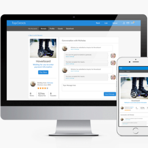
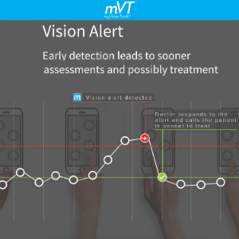
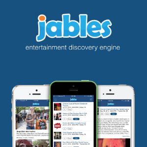

I am an innovative Data Driven Marketing Leader that focuses on the intersection of digital marketing, eCommerce and using data to improve business decisions to help small to large businesses get greater visibility and convert that visibility into a greater rate of customers. Texas native and Baylor grad who loves craft beer, the lake, baseball, books, and movies.
Marketing Strategy - Led product marketing efforts including defining product scope, setting key milestones, tracking project deliverables, tracking project expenses, and creating business models for 4 Software as a Service (SaaS) concepts. Analyzed on site customer behavior through sales funnels and improve bounce rates on low performing pages.
Digital Marketing & Search Engine Marketing (SEM) – Ran digital marketing campaigns on search and social platforms. Accumulated keyword performance data in an SQL database and leveraged to optimize content for improved organic search and conversion results. Optimized ads by adjusting bids, segmenting campaigns, and optimizing media to lower cost per acquisition (CPA) and increase click through rate (CTR) and conversion.
Growth Hacking - Created low cost, high yield marketing initiatives utilizing social media, search, content marketing, mobile apps, and influencer endorsements. Created a YouTube channel that gained 40k views and using a customer advocacy strategy. Wrote content marketing articles to gain visibility and valuable backlinks generating search and referral traffic. Designed and built a mobile app that gained thousands of users with no paid ads.
Marketing Qualified Lead Generation – Leveraged web properties, 3rd party databases, and mobile applications to obtain and qualify leads. Acquired 10k+ leads of optometrist and used 5 criteria to score and prioritize leads in CRM. Implemented marketing automation and lead generation for a rebranded hotel chain that increased occupancy to 80%.
Financial Modeling - Built several financial models including product P&Ls, project budgets, and detailed revenue models. Increased the revenue opportunity for one startup by shifting their business model from B2C to B2B increasing their revenue potential by 250%.
Digital Marketing & Search Engine Marketing (SEM) Manage $650k+ in annual marketing spend that drove an incremental 19% or $2.1M in revenue for 9 brands. Developed the marketing strategy for paid search and social media campaigns. Optimized pay per click (PPC) campaigns to improve conversion rate from under 2% to over 6% while increasing visibility with 5M+ weekly impressions and increases advertising return on investment (ROI) by reducing acquisition costs by a third.
eCommerce - Lead several eCommerce branding and merchandising initiatives on Amazon Vendor Central, Amazon Seller Central, Wayfair, and Overstock. Optimize product pages by A/B testing site content like photos, video, and keyword dense titles and product features. Measured optimization impact by monitoring conversion rate by category.
Search Engine Optimization (SEO) - Continuously update campaigns and content to improve organic and paid search performance. Perform keyword research using online tools, competitor analysis, and analyzing an internal database of over 100k+ keywords with keyword performance data by week.
Strategy - Created marketing strategies supported by 50+ marketing initiatives including product development, product marketing, events, and various advertising campaigns.
Marketing Initiative Prioritization - Prioritized 50+ marketing initiatives and $100M+ marketing budget by financially quantifying business impact.
Customer Segmentation - Led a customer segmentation project that categorized 20k+ agencies into 4 customer segments and estimated value contribution by segment.
Marketing Analytics - Authored and tracked various KPIs for marketing initiatives and assisted in the development of executive and employee dashboards.
Provided financial planning/analysis for all non-air revenue and the technology expense lines. Created annual budgets, P&L statements, monthly variance explanations and forecasts. Prepared reports and conducted presentations for the SEC, the U.S. Department of Commerce, and the board of directors.
Provided various financial plannaing and analsys for various overseas groups in a large public communications company. Revenue planning and deal review for a large softdrink company.
Managed three quick-serve restaurant franchises, a car wash, and a convience store and gas station. Attended franchise training for all three concepts. Managed a team of two dozen people and trained management group. Managed marketing initiatives for each concept coordinating with franchise headquarters, softdrink distributors, and tabaco companies who provided marketing funds and product discount.
I have used Google Analytics since 2009 and I have been certified since 2014. I have installed, optimized, and analyzed traffic, inbound marketing initiatives, and site content for eight different sites.
I have run a number of Google Adwords campaigns for several brands. Specific certification details can be viewed on my Google Acedamy Profile page.
Set up a number of inbound marketing, marketing automation, and lead generation projects that leverage web properties and mobile applications to gain marketing qualified leads (MLQs).

TapGoods is a s an online marketplace enabling people to rent their stuff on a short-term basis. Items can be picked up or delivered using TapGoods' Door-To-Door service. TapGoods collects 20% on each rental. Popular rental categories include party rentals, equipment rentals, recreational items, and moving equipment.
View Site
The mVT © is the only FDA cleared hyper acuity vision monitoring platform that helps doctors track changes in vision for AMD and diabetic patients. Patients use a simple test administered on their mobile device or tablet. Doctors can monitor and are notified when there are changes in their patients vision.
View Site
Jables is a digital entertainment guide with a comprehensive list of entertainment options that users can sort and filter. Jables uses artificial intelligence to prioritize events based on user interactions on the site. Additionally, Jables produces a weekly YouTube show that highlights cool events in large metroplitan areas.
View SiteMy uncle, Kip Slawter, was in an accident that left him a quadriplegic. He is a pastor, but the accident made preaching impossible. He wanted to continue spreading the gospel and share his story as a quadripelegic, so I have helped him with his site. The site is a WordPress site that is now hosted on HostGator. I provide quarterly analytics on traffic sources and his most popular posts. I also implemented social sharing, a custom theme, and optimized the site for search engines.
View SiteRed Flying Horse was a proof of concept for a local show that highlighted cool events like theater, festivals, and music. 13 episodes were completed that as of the end of 2016 had garnered over 33.2k views, of which 91% were views from people in Texas. Additionally, the largest sources are Google and YouTube search.
View Videos